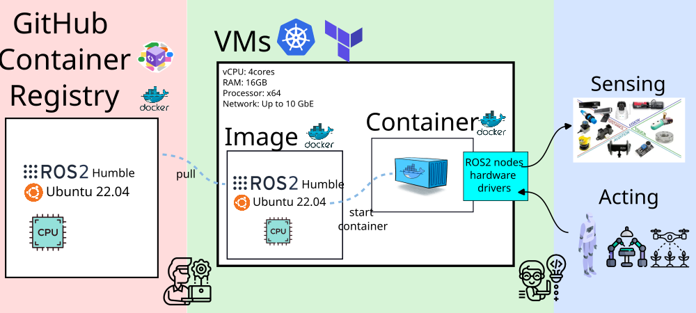
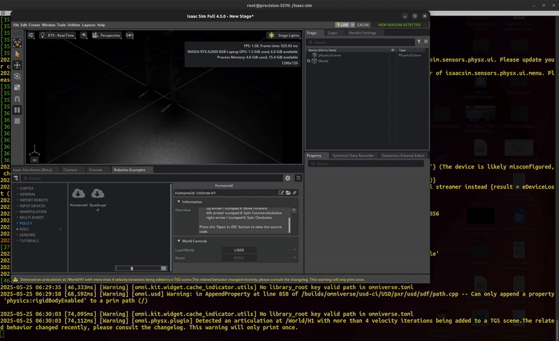
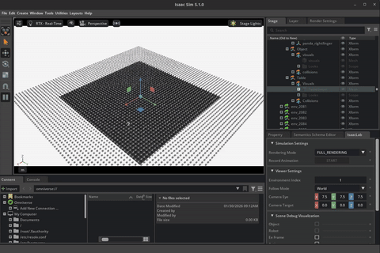
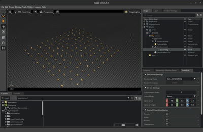
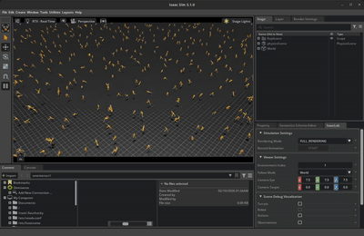
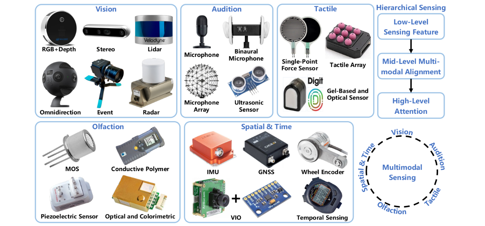
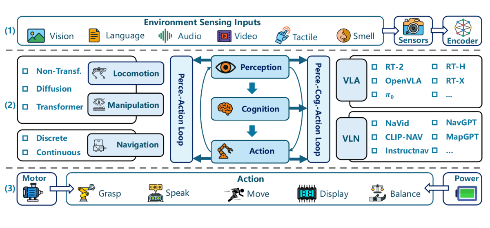
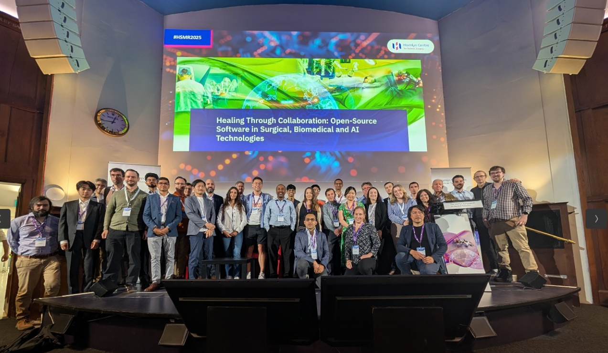

From Code to Care:
Modernizing ROS2 Skills for Orchestrating
Cloud Brains, Physical Sensors, and Networks
Overview
Introduction
Modernizing ROS 2 Skills
🔧 Hacking and Orchestrating Cloud Brains, Physical Sensors, and the Network

Figure 1: Cyber physical systems, cloud layer and participants
UCL Infrastructure
Orchestrating Cloud Brains, Physical Sensors, and the Network
🤖 Orchestrating UCL infrastructure

Figure 2: Servers in UCL infrastructure and their network communication
Demos
Orchestrating Cloud Brains, Physical Sensors, and the Network
Demos: VM↔︎VM and Bare-metal↔︎VM Communication with zenoh-plugin-ros2dds
- Docker container with ROS2 dependencies
- Github Container Registry
- VMs managed with terraform and kubernetes (k8s)

Demos: IsaacSim and IsaacLab




Future work, Key Takeaways, Calls to Action and Acknowledgements
Future work: Multimodal Sensing

Figure 8: Fig 11 from Liu et al. 2025 Neural Brain: A Neuroscience-inspired Framework for Embodied Agents arXiv preprint: 2505.07634
Future work: Developing Embodied Agents

Figure 9: Fig 15 from Liu et al. 2025 Neural Brain: A Neuroscience-inspired Framework for Embodied Agents arXiv preprint: 2505.07634
Future events: Hamlyn Workshop 2025
- 50 partcipants, 10 speakers, 6 posters presenters and sold out event!
- Open-Source development in Medical Robotics Late June 2026 at London, UK

Open@UCL Blog, Sep 2025, Shaping Tomorrow’s Healthcare: Unlocking the Power of Open-Source AI and Robotics link.
Key Takeaways & Why This Matters
- Lowering the Barrier to Advanced Robotics at Scale
- Cloud-ready, cost-aware infrastructure enables hands-on robotics training and research using real sensors, networks, and constraints.
- A Proven, Scalable Model for Collaboration
- High-performance networking and shared platforms make cross-department and cross-institution collaboration practical and repeatable.
- A Testbed for Research, Training, and Innovation
- The testbed supports skills transfer, research experimentation, and the rapid development of new robotics workflows.
- Call to Action
- Partner with us to extend the testbed, through collaboration and funding to scale training, expand research use cases, and deploy models beyond a single institution.
Thank You to UCL colleagues. Let’s Connect!
UCL CEGE: UCL Civil, Environmental and Geomatic Engineering:
Mickey Li, Chris BendkowskiUCL ARC: UCL Advanced Research Computing Centre:
Marlon Wijeyasinghe, James Legg, Mack Nixon, Mahmoud Abdelrazek, Sunny Park, Emily Dubrovska, Yagmur Ozdemir, Ruaridh Gollifer, Samantha Ahern, Miguel Xochicale, James Hetherington- Unified-AI team: Andrew Esterson and Sylvie Ramos
- Condenser team: Sam Reece and Brian Maher
Get in touch! GitHub: https://github.com/mxochicale
Extra slides
Miguel Xochicale